Contact-induced change and sociolinguistics:
an experimental study on the Gallo-Italic dialects of Sicily
I dialetti galloitalici diffusi nella Sicilia centro-orientale rappresentano il risultato dell'immigrazione medievale di coloni provenienti dal Piemonte meridionale e dalla Liguria, dopo la conquista normanna dell'isola (1061-1091).
Per quanto riguarda la lingua parlata da queste comunità, emerge una particolarità: la maggior parte delle loro caratteristiche lessicali e sintattiche si è sviluppata attraverso il contatto con il siciliano, mentre a livello fonetico/fonologico è rimasta molto conservativa, mantenendo in gran parte i caratteri originari settentrionali.
Colonie galloitaliche in Sicilia
Le minoranze galloitaliche della Sicilia sono ciò che resta di un vasto flusso migratorio che, tra la fine dell’XI e la metà XIII secolo, portò all’insediamento di consistenti gruppi di coloni dall’Italia nord-occidentale, sparsi in almeno 24 centri e casali ritenuti strategici, dislocati lungo l’asse verticale S. Lucia del Mela (sul Tirreno)-Butera (sul mare africano). Tale immigrazione fu incoraggiata, per motivi di natura demografica, politico-militare e religiosa, dalla monarchia normanna, in virtù dei legami con la dinastia Aleramica del Monferrato.
Informazioni sul progetto
Descrizione: I dialetti galloitalici della Sicilia rappresentano il risultato di migrazioni medievali dall’Italia nord-occidentale. A causa del prolungato contatto con le varietà siciliane limitrofe, questi dialetti costituiscono un vero e proprio laboratorio naturale per indagare alcuni aspetti del contatto linguistico, in particolare il prestito strutturale, che intacca livelli della lingua quali fonologia, morfologia e sintassi. A tale riguardo, un aspetto finora non indagato riguarda il fatto che, mentre il lessico, la sintassi e la morfologia derivativa sono fortemente interferiti, il sistema fonetico e fonologico appaiono molto conservativi.
Finalità: Il presente progetto mira a indagare le cause soggiacenti a tali differenze, relativamente all’accettazione o meno di prestiti strutturali in diverse sotto-aree della grammatica della lingua ricevente. In tale prospettiva, i dialetti galloitalici della Sicilia costituiscono un banco di prova per la teoria generale sul contatto linguistico, specie in relazione alle dinamiche sociolinguistiche.
Risultati attesi: Una delle ipotesi da verificare nel presente progetto è che la notevole conservazione del sistema fonetico e fonologico, a fronte di una notevole quantità di prestiti lessicali, nasconda motivazioni di carattere sociolinguistico.
Un secondo punto di interesse teorico riguarda la disponibilità, da parte della lingua ricevente, ad accettare in larga misura il prestito strutturale. L’accoglimento di strutture sintattiche dal siciliano al galloitalico potrebbe dipendere dalla crescente presenza di galloitalici divenuti progressivamente sicilianofoni, con un conseguente e significativo aumento di parlanti bilingui.
Risultati del progetto
- Assenza, Elvira, Castiglione, Angela, De Angelis, Alessandro & Menza, Salvatore (edd.) (comitato di redazione: Cardullo, Sara Natalia, Cosentino, Michele, & Di Caro, Vincenzo Nicolò) (2025), I dialetti galloitalici di Sicilia tra resistenza e assimilazione (“Progetto Galloitalici”, 4), Palermo, Centro di Studi Filologici e Linguistici Siciliani, pp. 365. Link
- Assenza, Elvira (2025), “Ipotetiche dell’irrealtà nelle varietà lombardo sicule e nel siciliano: un confronto in diacronia”, in I dialetti galloitalici di Sicilia tra resistenza e assimilazione (“Progetto Galloitalici”, 4), Palermo, Centro di Studi Filologici e Linguistici Siciliani, pp. 143-161.
- Assenza, Elvira (in stampa), “Resistenza vs advergenza nelle ipotetiche dell’irrealtà del galloitalico di Sicilia: uno studio tra diacronia e sincronia”, in Atti del XXXI CILFR - Congresso internazionale di linguistica e filologia romanza (Lecce, 30 giugno-5 luglio 2025).
- Cantone, Domenico et al. (in press), “Modeling Linguistic Phenomena in Gallo-Italic Dialects: The Linguistic Phenomena Ontology”.
- Cantone, Domenico et al. (2025), “An Etymological Dataset for Nouns and Verbs in the Gallo-Italic Variety Spoken in Nicosia and Sperlinga”, in SWODCH’25: International Workshop on Semantic Web and Ontology Design for Cultural Heritage, Catania.
- Cantone, Domenico et al. (2025), “An OWL Ontology for Linguistic Phenomena with Applications to Gallo-Italic Dialects in Sicily”. Link
- Cardullo, Sara Natalia (2024), “Sulla questione dell’alternanza tra perfetto analitico e perfetto sintetico in siciliano”, «Rivista Italiana di Dialettologia» 48, pp. 15-34. Link
- Cardullo, Sara Natalia & Groothuis, Kim (2024), “Revisiting syntactic microvariation and diachrony in the dual complementizer systems of upper southern Italy”, «Transactions of the Philological Society» 122(2), pp. 281-307. Link
- Cardullo, Sara Natalia & Cosentino, Michele (in stampa), “Configurazioni del repertorio linguistico e identità linguistiche percepite nella “Lombardia siciliana”: il caso di Nicosia (EN)”, in Atti del XXXI CILFR - Congresso internazionale di linguistica e filologia romanza (Lecce, 30 giugno-5 luglio 2025).
- Cardullo, Sara Natalia et al. (in stampa), “I dialetti galloitalici di Sicilia: un laboratorio naturale per il contatto linguistico”, «Bollettino del Centro di Studi filologici e linguistici siciliani».
- Castiglione, Angela (in stampa), “Il contatto galloitalico-siciliano: note di sociolinguistica storica”, «Ricerche Linguistiche» 2025/3.
- Castiglione, Angela (in stampa), “Effetti del contatto e preservazione di tratti altoitaliani nella morfologia nominale dei dialetti galloitalici della Sicilia”, in Atti del XXXI CILFR - Congresso internazionale di linguistica e filologia romanza (Lecce, 30 giugno-5 luglio 2025).
- Castiglione, Angela & Menza, Salvatore (2025), “Sull’origine di da nelle varietà galloitaliche della Sicilia”, in I dialetti galloitalici di Sicilia tra resistenza e assimilazione (“Progetto Galloitalici”, 4), Palermo, Centro di Studi Filologici e Linguistici Siciliani, pp. 193-225.
- Castiglione, Angela (2025), “The gender system in the Gallo-Italic minority varieties in Sicily between convergence and diversity”, «Isogloss. Open Journal of Romance Linguistics» 11(6)/2, pp. 1-19. Link
- Castiglione, Angela (2025), “Grammatiche scisse nel contatto linguistico: il caso delle minoranze galloitaliche in Sicilia. Parte seconda”, «Incontri Linguistici» 48, pp. 51-66. Link
- Castiglione, Angela (2024), “Grammatiche scisse nel contatto linguistico: il caso delle minoranze galloitaliche in Sicilia. Parte prima”, «Incontri Linguistici» 47, pp. 11-46. Link
- De Angelis, Alessandro (2023), “The strange case of the Gallo-Italic dialects of Sicily. Preservation and innovation in contact-induced change”, «Languages» 8(163), pp. 1-18. Link
- De Angelis, Alessandro (2025a), “Bad rules, good rules: il caso della marcatura differenziale dell’Oggetto in un dialetto galloitalico di Sicilia”, in Lingue minoritarie, italiano nel mondo. Strutture e aspetti sociolinguistici, Udine, Forum, pp. 163-176. Link
- De Angelis, Alessandro (2025b), “Strategie anti-lenitive nel galloitalico di Sicilia: sull’importazione di una regola fonologica”, in I dialetti galloitalici di Sicilia tra resistenza e assimilazione (“Progetto Galloitalici”, 4), Palermo, Centro di Studi Filologici e Linguistici Siciliani, pp. 127-142.
- De Angelis, Alessandro (2025c), “Il sistema dei pronomi tonici nicosiano e sanfratellano: un caso di conservazione per contatto?”, in I dialetti galloitalici di Sicilia tra resistenza e assimilazione (“Progetto Galloitalici”, 4), Palermo, Centro di Studi Filologici e Linguistici Siciliani, pp. 99-112.
- De Angelis, Alessandro (in stampa), “Sociofonetica e valori identitari nei dialetti galloitalici di Sicilia”, in Storia, lingue e culture dello Stretto, Messina, Di Nicolò, pp. 5-27.
- De Angelis, Alessandro (in preparazione), “Sull’origine del tipo lluna/ḍḍuna ‘luna’ nei dialetti galloitalici di Sicilia”, «Revue de linguistique romane».
- Di Caro, Vincenzo N. (2024), “Sulla creatività linguistica della perifrasi ‘mostrare a’ + infinito nel dialetto galloitalico di Nicosia”, Polyphonie, Vol. 15, Nr. 1/2024. Link
- Di Caro, Vincenzo N. & Menza, Salvatore (2024), “Contact-induced change in Sicilian Gallo-Italic. The multipurpose Aviri a + Infinitive Construction in the dialect of Nicosia”, Annali di Ca’ Foscari - Serie occidentale, 58. Link
- Menza, Salvatore (2023), “L’alternanza dittongo/monottongo nei verbi völë̀ (‘volere’) e pödë̀ (‘potere’) in testi novecenteschi nel dialetto galloitalico di Nicosia”, «Cuadernos de Filología Italiana», 30, pp. 163-176. Link
- Menza, Salvatore (2023), “Ortografia e vitalità delle lingue di minoranza. Il caso del galloitalico di Nicosia tra identità e multilinguismo”, Polyphonie, Vol. 13 (1/2023).
- Menza, Salvatore (2024), Presentazione (§ 2) a S.C. Trovato, Cinquant'anni di storia linguistica della Sicilia, Alessandria, Edizioni dell'Orso, pp. XIII-XIX.
- Menza, Salvatore & Trovato, Salvatore C. (2025), “Il ruolo dell’ortografia nella produzione letteraria a Nicosia e San Fratello”, in I dialetti galloitalici di Sicilia tra resistenza e assimilazione (“Progetto Galloitalici”, 4), Palermo, Centro di Studi Filologici e Linguistici Siciliani.
- Menza, Salvatore (in stampa), “Il contatto tra siciliano e galloitalico attraverso un’analisi semiautomatica del lessico nicosiano”, in Atti del convegno “Vecchi e nuovi spazi dei dialetti e delle lingue di minoranza nell’Italia di oggi” (Sappada, 25-27 giugno 2025).
- Menza, Salvatore (in stampa), “Faire de la lexicographie dans les centres gallo-italiques de Sicile: modèles théoriques et ethnotextes. Le cas de Nicosia et de Sperlinga”, «Cahiers du dictionnaire».
I seguenti vocabolari e set di dati OWL sono stati sviluppati nell'ambito di questo progetto.
Il nostro Team
Università degli Studi di Messina
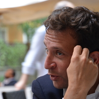 |
Alessandro DE ANGELIS
|
Linguista (Coordinatore scientifico)
alessandro.deangelis@unime.it
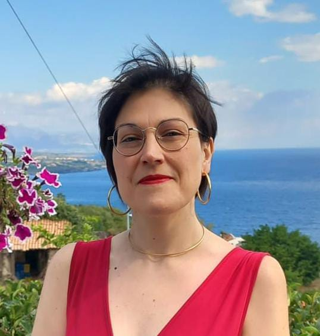 |
Angela CASTIGLIONE
|
Linguista
angela.castiglione@unime.it
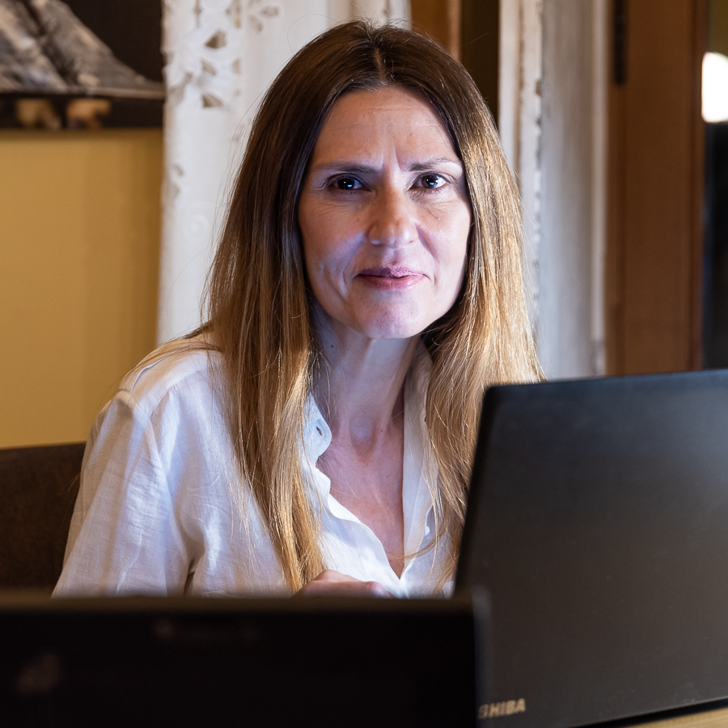 |
Elvira ASSENZA
|
Linguista
elvira.assenza@unime.it
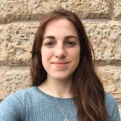 |
Sara Natalia CARDULLO
|
Linguista
saranatalia.cardullo@unime.it
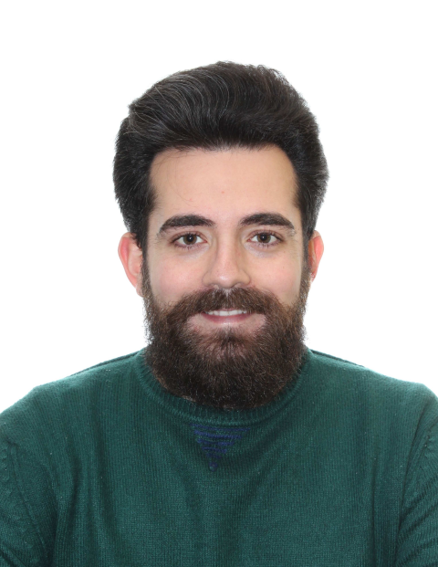 |
Michele COSENTINO
|
Linguista
michele.cosentino@unime.it
Università degli Studi di Catania
Linguista (Vicecoordinatore scientifico)
salvatore.menza@unict.it
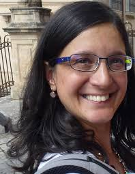 |
Marianna NICOLOSI ASMUNDO
|
Logica Comptazionale
nicolosi@dmi.unict.it
 |
Vincenzo Nicolò
DI CARO
|
Linguista
vincenzo.dicaro@unict.it
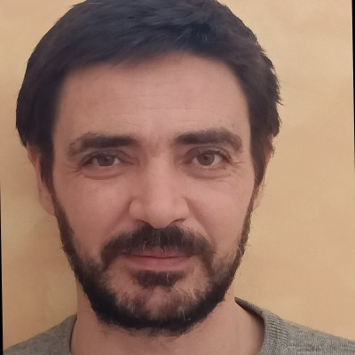 |
Cristiano LONGO
|
Informatico
cristianolongo@opendatahacklab.org
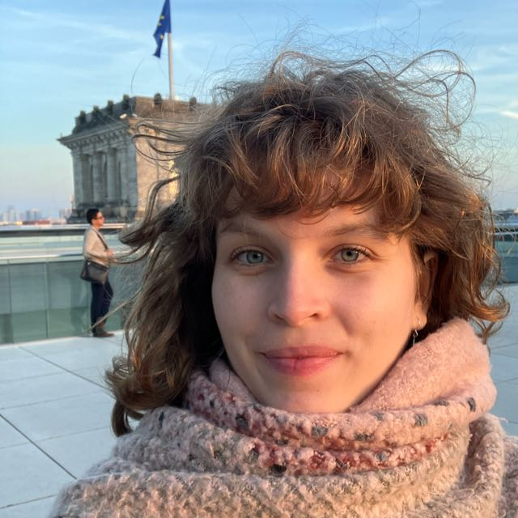 |
Federica BREIMAIER
|
Statistica
federica.breimaier@uzh.ch
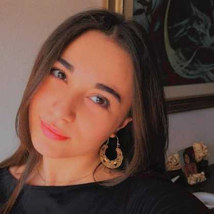 |
Sofia
DI BELLA
|
Web Developer
sofia.dibella00@gmail.com
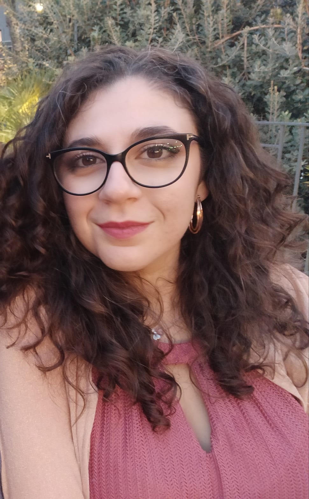 |
Erika DAMIGELLA
|
Linguista
erika.damigella@unict.it
Collaboratori Esterni
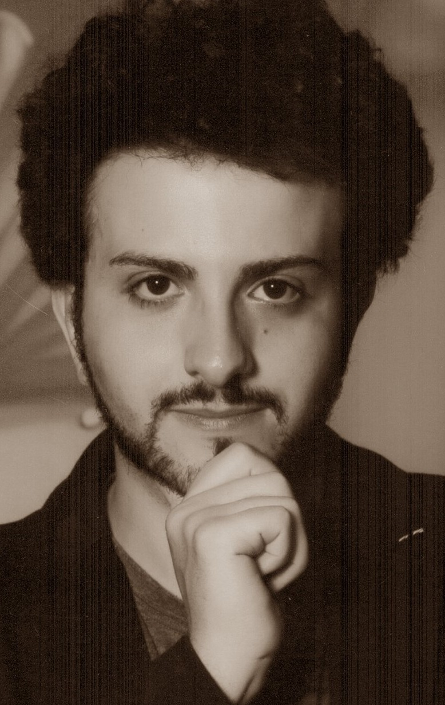 |
Daniele Francesco SANTAMARIA
|
Università degli Studi di Catania
Informatico
daniele.santamaria@unict.it
Università degli Studi di Catania
Informatico teorico
domenico.cantone@unict.it
Partners